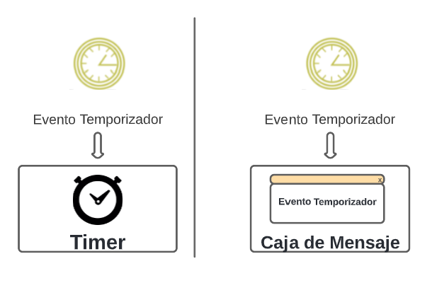

| R0 |
Cuando se indica un elemento BPMN, este puede transformarse en un formulario, para el cual pueden agregarse los atributos que necesita mediante el uso de los siguientes estereotipos. |
|
| R1 |
Generalmente una tarea del tipo usuario suele tener como resultado un formulario. |
|
| R2 |
Cuando existen múltiples tareas de tipo usuario en carriles diferentes y comparten una relación de dependencia, se genera un formulario por cada carril. |
|
| R3 |
Una tarea que continúa en una compuerta exclusiva, si es de tipo usuario, produce como resultado un formulario cuyos datos se utilizan para representar los atributos de una clase y luego generan campos de entrada. |
|
| R4 |
Al terminar una compuerta paralela, cuando existen tareas de tipo usuario y estas tareas se encuentran en carriles diferentes, se produce un formulario por cada carril. Estos formularios tienen diferentes alternativas:
- Formulario
- Asistente
- Caja de Grupo (Group Box)
- Cuadro con Pestañas (Tabbed Dialog Box)
|
|
| R5 |
Cuando existen múltiples tareas de tipo usuario en un carril compartido y comparten una relación de dependencia, se genera una interfaz para establecer los pasos a seguir en un proceso. Estos pasos pueden representarse de 3 maneras diferentes. |
|
| R6 |
Al terminar una compuerta paralela, si existen dos tareas de tipo usuario y comparten una relación de dependencia, una interfaz es generada para guiar al usuario mediante las siguientes alternativas: Wizard, Tabbed Dialog Box y Group Box |
|
| R7 |
Cuando existen dos tareas, una de tipo Usuario y otra de tipo Servicio, y existe una relación de dependencia entre ambas, la primera tarea genera un formulario cuyos datos pueden ser procesados por la segunda tarea. |
|
| R8 |
Cuando una tarea de servicio proviene de una compuerta exclusiva, es un servicio web o evento programado el que debe procesar los datos. |
|
| R9 |
Los textos de compuertas exclusivas en un diagrama BPMN se pueden representar como una etiqueta ‘label’ que describa una pregunta cuya respuesta sea proporcionada por el usuario. |
|
| R10 |
Los textos que aparecen en objetos de conexión en una compuerta exclusiva producen dos alternativas posibles.
|
|
| R11 |
Al terminar una compuerta basada en eventos, cuando el evento es de tipo temporizador y este posee una variable que representa el tiempo, se pueden generar los siguientes controles:
|
|
| R12 |
Al terminar una compuerta basada en eventos, cuando el evento es de tipo temporizador y este posee una variable que representa el tiempo, se pueden generar los siguientes controles: |
 |
| R13 |
Cuando todas las ramas de una compuerta exclusiva desembocan en un mismo carril, se producen los siguientes controles:
|
|